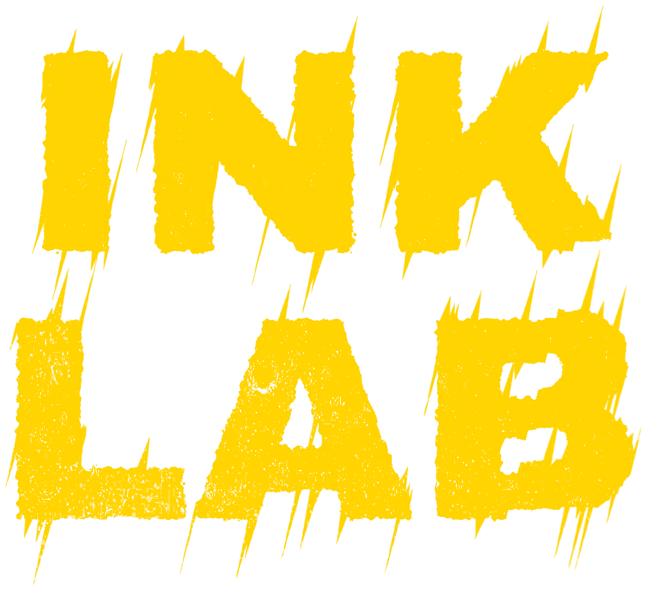
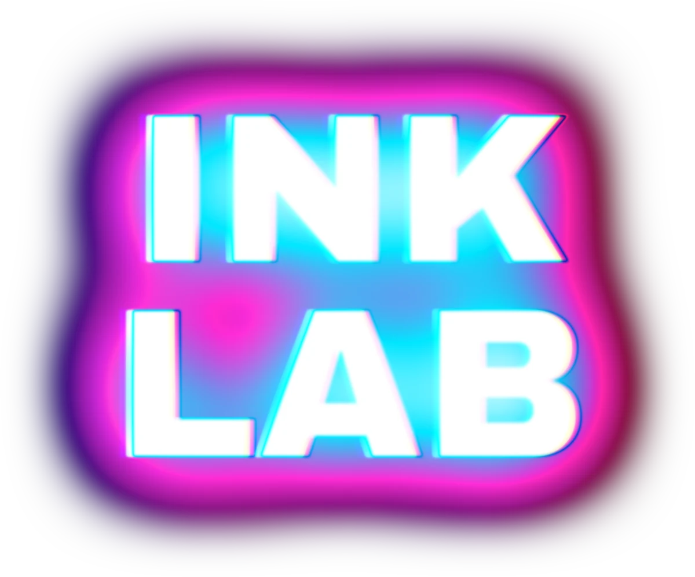
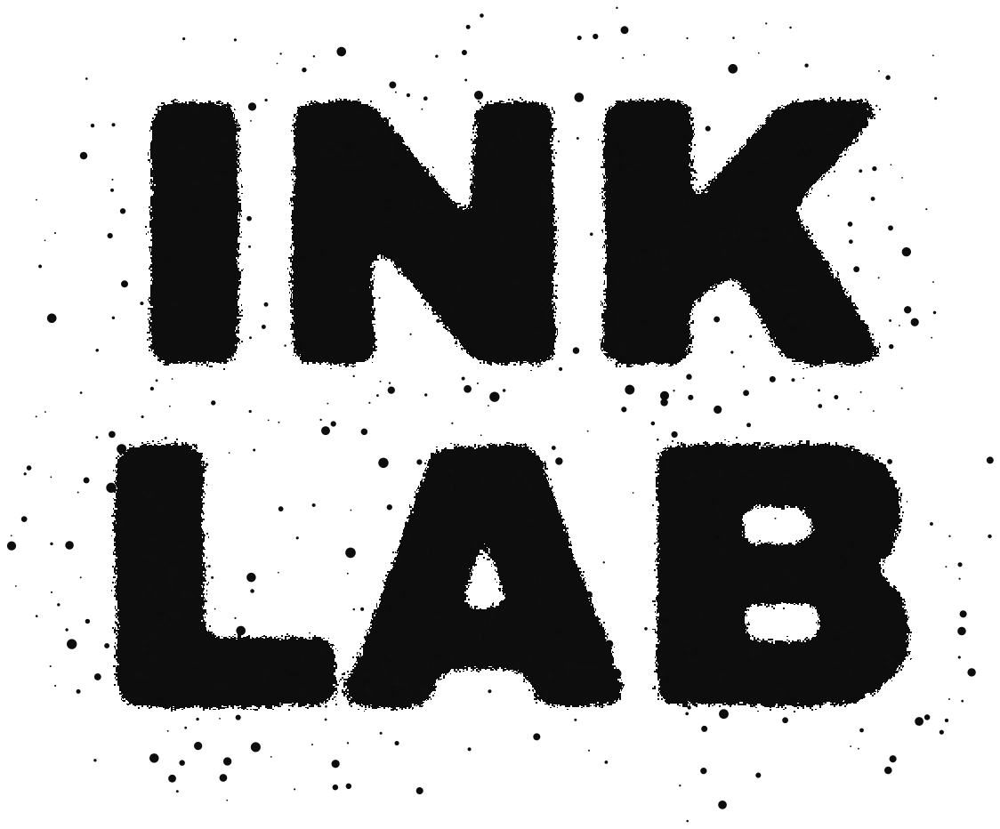
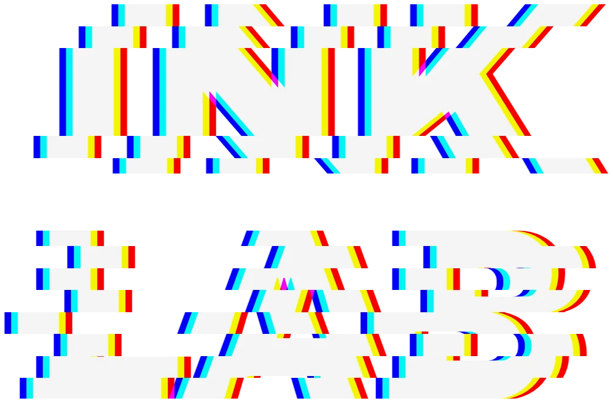
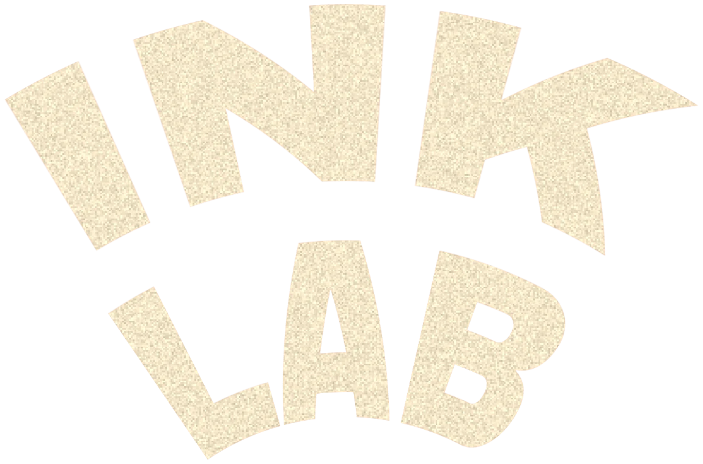
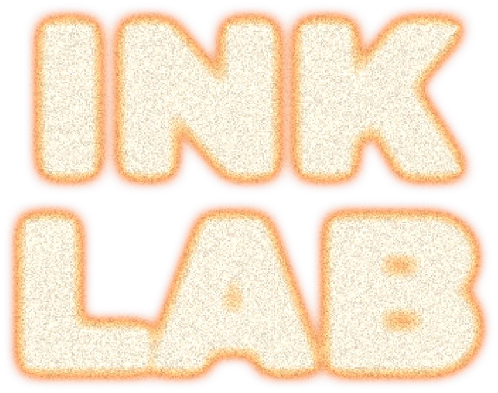
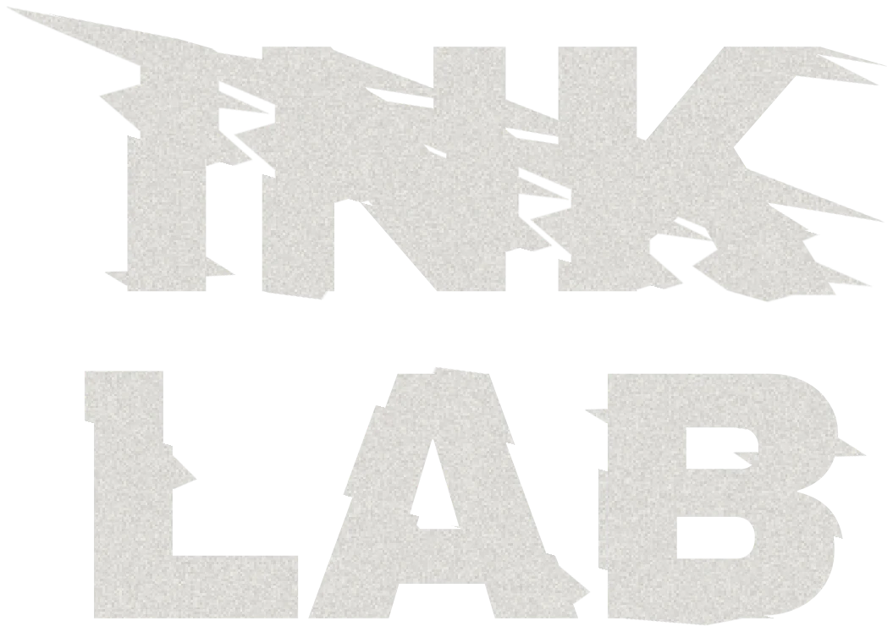

Effets de texte · Photoshop · PowerPoint · navigateur
Du texte qui bave, qui brûle, qui glitche.
Ink bleed, glows, flous progressifs, destruction et textures HD, avec un aperçu en temps réel. Choisis un style, règle-le, puis exporte un PNG transparent ou garde ton texte modifiable.






Essaie-le ici.
Ce n'est pas une vidéo : c'est l'application. Tape ton texte, choisis une police parmi les 1 891 Google Fonts, passe d'un style à l'autre et télécharge le PNG.
Des styles pour démarrer.
Chaque style est un point de départ : couleurs, axes, intensités, perspective et textures se règlent ensuite un par un.

Éclats
Fuite latérale
Encre photocopie
Glow rétro
Arche rétro
Néon spectral
Distorsion orange
Glitch net
Dans tes outils.
Le même moteur et les mêmes styles partout. Les mises à jour de la version PowerPoint et de la version web arrivent toutes seules.
Photoshop
Photoshop 2024 (v25) ou plus récent, Mac et Windows.
- Télécharge le fichier .ccx.
- Double-clique dessus : Creative Cloud installe le plugin.
- Dans Photoshop : Plugins › Ink Lab, sélectionne un calque de texte.
Le rendu peut sortir en objet dynamique : le texte reste modifiable.
PowerPoint
Microsoft 365 pour Mac.
- Ouvre la page d'installation et copie la commande.
- Colle-la dans le Terminal, puis relance PowerPoint.
- Sélectionne une zone de texte, puis Accueil › Ink Lab.
Clique sur une image Ink Lab pour retrouver son texte et ses réglages.
Version web
Chrome, Safari, Firefox, Edge. Rien à installer.
- Tape ton texte et choisis ta police.
- Choisis un style et règle les effets.
- Télécharge un PNG transparent en 1×, 2× ou 4×.
Tes styles sont gardés dans ton navigateur.